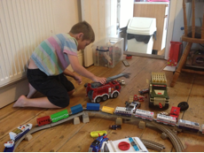
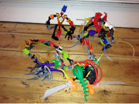

Q and A
Why did I set up Starlight ASD Support?
I set up Starlight ASD Support as I am passionate about working with children, teenagers and young adults with ASD and associated difficulties.
I am keen to provide effective and appropriate support to not just individuals but the whole family.
Every person I work with has unique gifts and abilities but by drawing on my own experience, personal and professional, my focus is to help every person progress and learn new skills to help them on a daily basis. Training also provides insight to families and professionals and has been received with much gratitude from support groups and professionals alike.
Why do I want to work with young people with ASD or social communication and interaction difficulties?
People with an ASD or associated difficulties have many special and amazing qualities and abilities which often get overlooked or remain unnoticed. Their behaviour is highly challenging and every family who lives with someone on the spectrum knows first hand the toil it takes on the whole house.
However I have always believed that rather than focusing on what they are unable to manage, I try and look beyond their difficulties, find a starting point and then slowly teach them skills at a pace and level appropriate for each individual. Working carefully with someone in this way encourages trust and enables a good relationship to be built so that they can then be encouraged to gently and willingly allow me to accept them in “their world”.
In return I can support them to learn new skills which will enable them over time to begin to participate and engage as their confidence, and self esteem grows with their new found social, communicative and interactive skills.
I strongly believe that there is potential in everyone, be it learning or saying a few words for the first time, or learning how to develop imagination or discovering how to make friends....the list is endless. I want to be able to try and give every child the chance by saying “What if....and Let’s try...because just maybe I can help turn the lock slightly to help open up their amazing worlds.
Through specific 1:1 work, group work and family support I try to offer full round support for every young person/ teenager and their family. I believe family support is essential, when working with individuals as it is vitally important that the whole family also receive support and where possible to complete the link by passing on information to schools and professionals as required.
Groups are also a vital part of the work I do, within groups they can practice the skills they are learning so they can transfer there skills into everyday situations. Groups mean they can practice these skills whilst being supported.